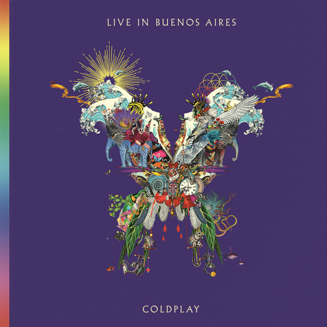

COLDPLAY
MÁS ALLÁ DE LA MÚSICA
Por Mónica Olivos
Desde sus comienzos hasta sus giras ecológicas, esta página es un homenaje a lo que hace de Coldplay algo más que una banda.
INTEGRANTES
Cris
Martin
Jonny
Buckland
Will
Champion
Guy Berryman
VOCALISTA PRINCIPAL
Toca piano y guitarra
Es el fundador y principal compositor
BATERISTA
Corista de algunas canciones
Toca el teclado ocasionalmente
GUITARRISTA PRINCIPAL
Cofundador de la banda
Corista de algunas canciones
BAJISTA
Es el más silencioso y reservado del grupo.
ÁL
BU
MES
Desde los pasillos universitarios de Londres hasta los escenarios más grandes del planeta, Cris Martin, Jonny Buckland, Guy Berryman y Will Champion han recorrido un camino único, lleno de emoción, experimentación y compromiso. Todo empezó en el año 2000 con Parachutes...
A lo largo de su trayectoria, Coldplay no solo ha creado melodías inolvidables, sino también letras profundas que conectan con lo más humano: el amor, la pérdida, la esperanza, la culpa, la identidad y la belleza del mundo. Cada canción es una ventana a los corazones de la banda y al de quienes los escuchan. Desde confesiones íntimas hasta reflexiones universales, sus letras nos invitan a detenernos y sentir. En “The Scientist”, Cris Martin canta al deseo de volver atrás para corregir errores del pasado. En “Fix You”, ofrece consuelo a quienes atraviesan el dolor. Y en “Coloratura”, nos lleva a mirar las estrellas para entender lo pequeños y a la vez significativos que somos.

CANCIONES
DESTACADAS
POR ÁLBUM
COLDPLAY EN VIVO
Desde sus primeros shows íntimos en pequeños clubes londinenses hasta llenar estadios en los cinco continentes, Coldplay ha sabido convertir cada presentación en un espectáculo multisensorial.
A continuación, un recorrido por algunas de sus actuaciones más icónicas, donde Coldplay demuestra que la música en vivo puede ser tan poderosa como transformadora.
Live 8, Londres
2005
Parte de uno de los eventos benéficos más grandes de la historia. Coldplay abrió el concierto de Hyde Park con
“In My Place” y demostró su capacidad de combinar música y activismo global.
GlastonburyFestival, UK
2002 / 2011 / 2016 / 2021
Cuatro apariciones que marcaron distintos momentos de su carrera. Su show de 2016, con visuales espectaculares y colaboraciones especiales, es recordado como uno de los mejores cierres del festival.


iHeartRadio Music Festival, Las Vegas
2014
Un despliegue de energía y carisma en uno de los escenarios más importantes del pop contemporáneo en EE.UU., reafirmando su éxito global.
Super Bowl Halftime Show EE.UU, 2016
Una de las actuaciones más vistas de la historia. Coldplay compartió escenario con Beyoncé y Bruno Mars, pero supo mantener su identidad con un espectáculo colorido, pacifista y lleno de emoción.
Live in Buenos Aires, 2017
Parte de la gira A Head Full of Dreams, este show fue grabado y lanzado oficialmente. Refleja la conexión única de la banda con el público latinoamericano.

Hollywood Bowl,
Los Angeles, 2021
Un show íntimo en uno de los escenarios más emblemáticos del mundo, marcando el regreso post-pandemia con una escenografía inmersiva y mensajes ecológicos.
Estadio Nacional, Chile, 2022
Un hito en su gira Music of the Spheres, primera banda internacional en cerrar con cuatro shows completamente agotados en el Estadio Nacional y una producción visual y emocional inolvidable. Chile vivió una comunión total entre banda y público.